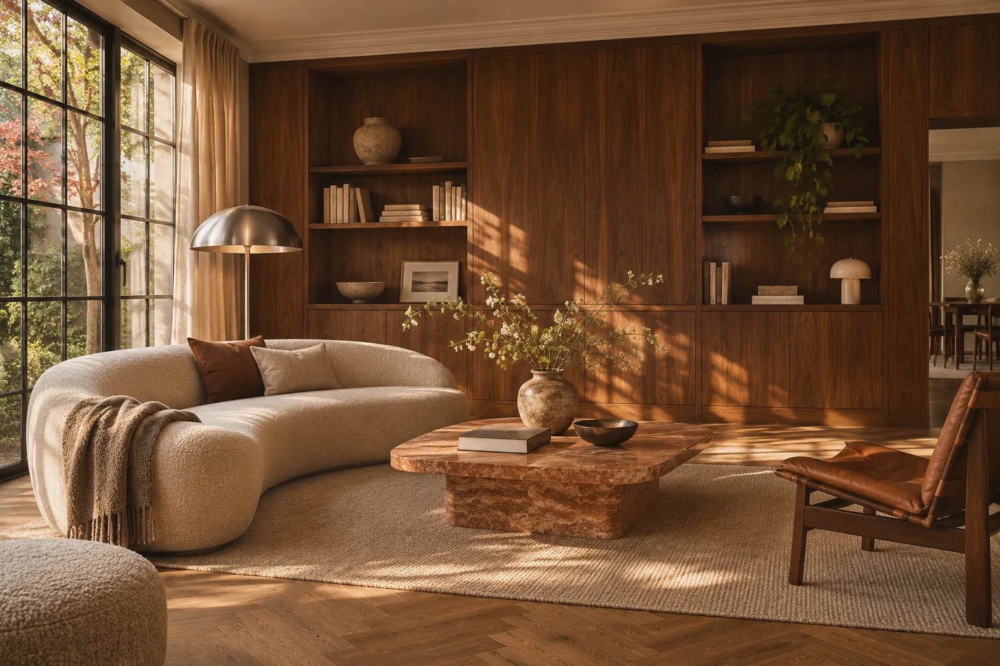

У одного пространства
много настроений.
Оставили одну комнату и меняем её материалы. Выберите цвет — сравните, как свет, дерево, ткань и камень работают вместе.

Не просто
бежевый.
Тёплое дерево, матовый камень, ткань, к которой хочется прикоснуться. Материалы должны хорошо жить рядом — и красиво стареть.
Терракота / тёплое дерево и камень
Палитра — это
больше, чем цвет стен.
Освещение
Смотрим на ориентацию окон, дневной свет и вечерние сценарии. Один оттенок ведёт себя по-разному в разных комнатах.
Материалы рядом
Собираем образцы дерева, ткани, камня и металла в одну композицию. Проверяем сочетание вживую.
Повседневность
Обсуждаем уход, износ, детей и домашних животных. Красивый материал должен подходить вашему быту.
Увидеть направление —
сохранить свой характер.
Эти интерьеры — визуальные концепции, а не выполненные клиентские объекты. При работе с реальной квартирой палитру и конструктивные решения уточняют по месту.
Палитра переключает два изображения на этой странице. Чтобы сравнить комнаты, используйте кружки мышью или клавишами Tab и Enter.